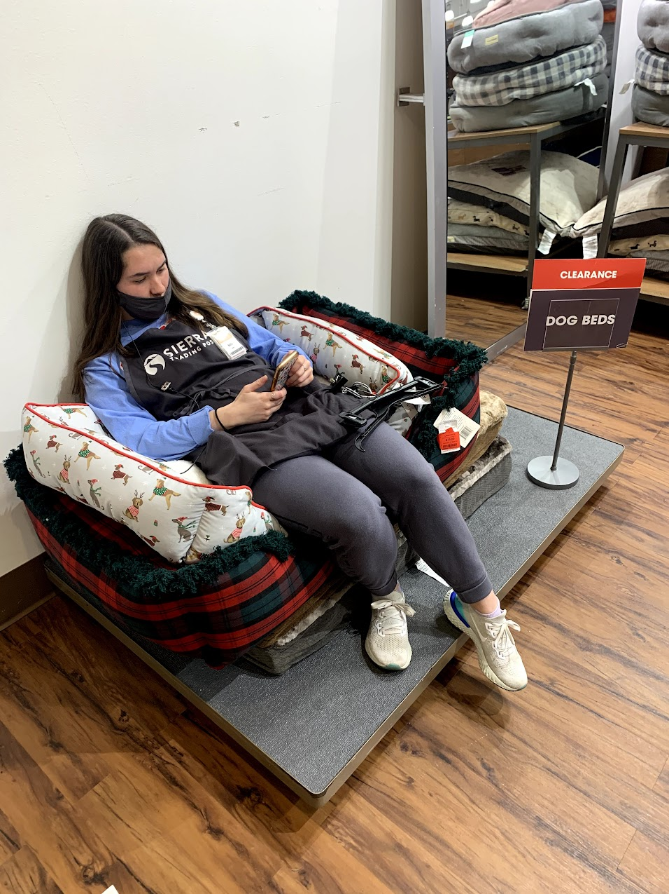
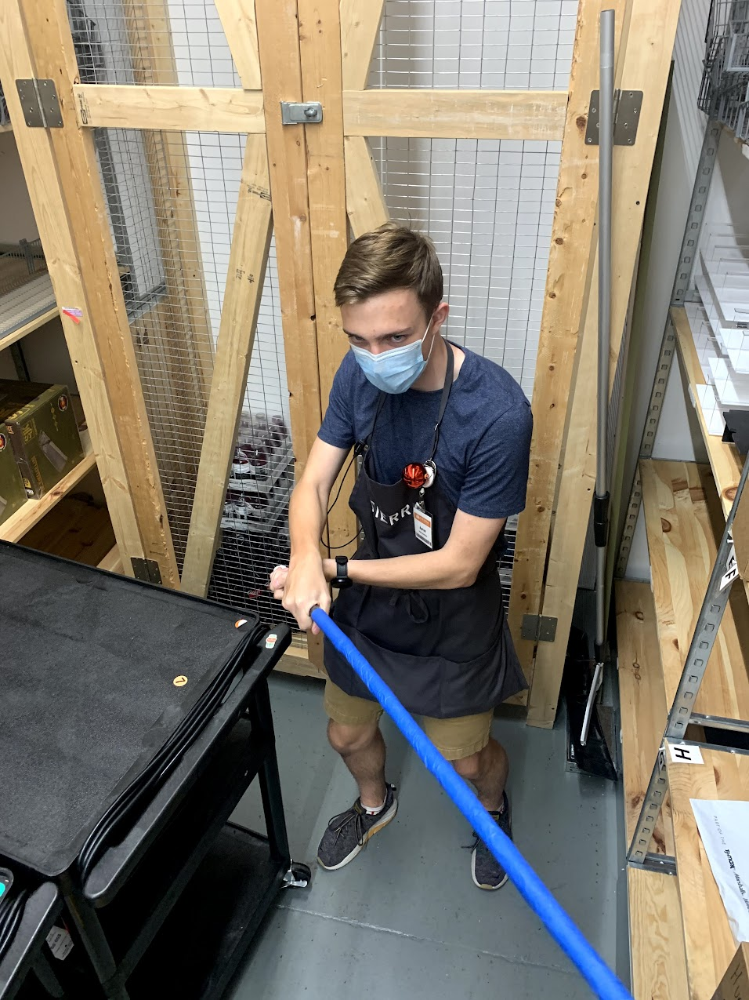
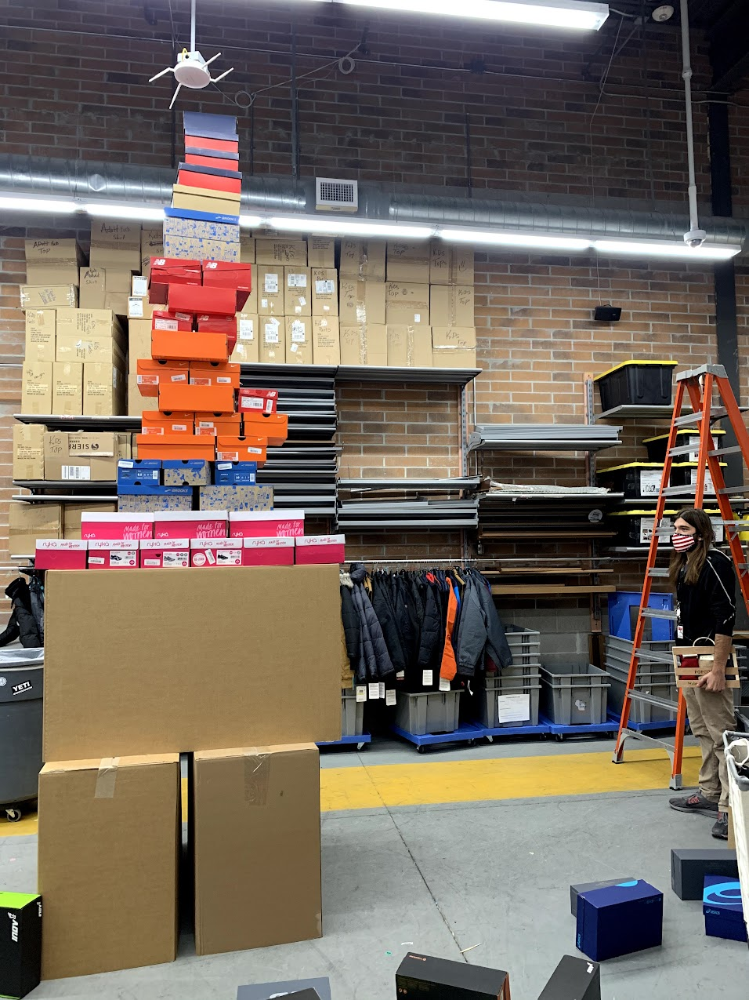
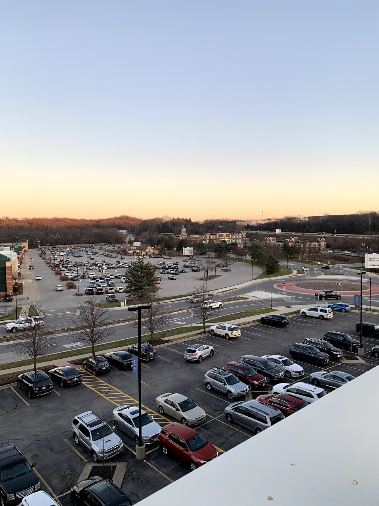

Sierra Experience
What? Seriously? Sierra? Retail Worker? I'm including my high school job on my experience??? Yes, although this job doesn't align with my technical interests, this was still a special and impactful time that shaped who I am today, so I could not in good conscience leave out an important stage in my professional development and life.
Sierra (formerly known as Sierra trading post) is a outdoor apparel and gear retail store owned by TJX, this was my first job when I was in highschool. I originally planned on working there in 2019, but I wanted to focus on my eagle scout project before I started working. A few months later, I started the application process, but COVID delayed this even further. Eventually I started working on July 20th, 2020.

I started working at Sierra mainly because both of my siblings worked there already. Looking back, I don't think we would have been able to share a car in between the three of us if that wasn't the case! Another reason was because I enjoyed the outdoors, especially at that time in my life, which fit in with the theme of the store.My start at Sierra was absolutely a baptism by fire. I was put up front on the registers for five, eight hour shifts for five consecutive days, which at the time was a pretty crazy foray into working. The first day was my orientation and training from my brother of all people. Next was just

After working up front for a few weeks, I went to the gear department. They told me they did this so that my siblings and I would all be in different departments but honestly I was just relieved that I didn't have to be up front. In the gear department I started working on

Throughout my time there I sometimes worked in the back, which was by far and away my favorite position there. In the backroom I worked on receiving and processing the merchandise. This was a really interesting and fun environment due to it being an isolated corner of the store and was usually pretty chill. More notably, the people in the backroom were also great and fun to work with. In particular, the backroom coordinator there, Cam, was a really great guy who I admired for his decisive yet laid back spirit. Because we were so efficient with the processing, we always spent a lot of time in between shipments challenging ourselves in fun ways, like seeing if we can unbox enough shoes to build a tower, or if we could break the unboxing record. As time went on and many of the people who I started to work with when I started left, the backroom became a little less enjoyable. On top of this, corporate started forcing us to follow a pretty unenjoyable assembly-line-like process that would allow us to process 6 boxes an hour, which is a lot less than our rate before then. Regardless, working in the backroom was a good experience, especially on the thursday nights in highschool where I could throw in my air pods and listen to the recorded zoom classes of the content that was going to be on the friday quizzes.

Some of my favorite memories there (roof) (covid) ().On what ended up being my last day, I figured that my time there was wrapping up. At that time, I was one of the college kids now, everyone was younger than me and
I suppose one could say this was just a highschool job and nothing more, and to a degree, they'd be right. Believe it or not, the retail experience was not gripping enough to inspire me to pursue a career dealing with angry customers trying to use an empty gift card. If nothing else, working at Sierra gave me something to do with my time, and gave me some spending money through my upperclassmen years of highschool and well into college. But more importantly, I think the people, and the experience working with my siblings will always be something I admittedly will look back fondly on.